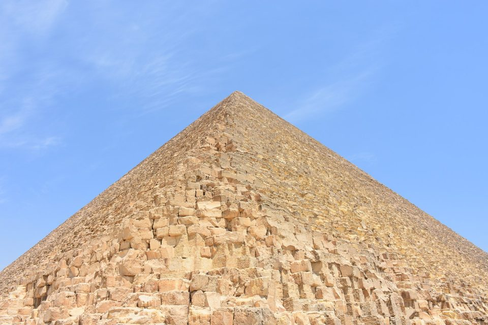

Egypt · Giza
The Great Pyramid of Khufu, Giza audio guide
10 stops · 16 min
Billed in ZAR
Unlocks in this browser after payment.
The last of the ancient wonders, still standing at Giza. Listen here, or get the Earwise app to play as you walk.
Stops
- 1
Akhet-Khufu, the Horizon of Khufu
Outside the north-east corner of the pyramid, where you can take in the whole north and east faces. This is stop 1 on the route.
Play0:00 / –:––Read along
Stand back and look up. This is the Great Pyramid, the tomb of King Khufu of the Fourth Dynasty. The Greeks called him Cheops. Its builders called it Akhet-Khufu, the Horizon of Khufu.
When was it built? Dates for Khufu's reign differ between scholars. A widely used range is about 2589 to 2566 BC. Others place him a few decades earlier. So the safe answer is around four and a half thousand years ago. The building work is usually put at about twenty years.
When it was finished it rose about one hundred and forty-six metres. Each side of the base measured about two hundred and thirty metres. It holds well over two million blocks of stone. For more than three thousand years it was the tallest structure made by human hands. In ancient times it was counted among the Seven Wonders of the World. It is the last of them left standing.
In the early 1880s the British surveyor Flinders Petrie spent two winters measuring it with great care.
Who built it? Not slaves, the evidence says. In the south-east of the plateau, archaeologists found a town where pyramid builders lived. Its oldest remains may date to Khufu's reign. It had streets, houses, bakeries and four huge galleries that may have been barracks. In the builders' cemetery, many skeletons show broken bones that had healed correctly, a sign of very good medical care. Bones of fish, birds, cattle, sheep, goats and pigs show the workers were well fed. Skilled craftsmen did the precision work. Much of the heavy labour was probably done by farmers, working in the season when the Nile flood covered their fields.
How were the blocks raised? That question is debated. Ramps are the most common explanation, but no single theory has won everyone over.
- 2
The last of the white casing
At the foot of the north face, below the entrance, where a few smooth blocks still sit at the base. This is stop 2 on the route.
Script and audio included when you buy - 3
Three doors into the stone
At the entrance area on the north face, where the original doorway and the tourist tunnel meet the pyramid. This is stop 3 on the route.
Script and audio included when you buy - 4
The Queen's Chamber
Inside the pyramid, in the Queen's Chamber, at the end of the long level passage that leaves the foot of the Grand Gallery. This is stop 4 on the route.
Script and audio included when you buy - 5
The Grand Gallery
Inside the pyramid, halfway up the Grand Gallery, the high sloping hall that leads to the king's burial chamber. This is stop 5 on the route.
Script and audio included when you buy - 6
The King's Chamber
In the King's Chamber, the granite room at the centre of the pyramid, in front of the stone sarcophagus. This is stop 6 on the route.
Script and audio included when you buy - 7
Where the offerings were made
At the foot of the east face, on the dark paving that is all that remains of the pyramid's mortuary temple. This is stop 7 on the route.
Script and audio included when you buy - 8
The queens' pyramids and a hidden shaft
Beside the northernmost of the three small queens' pyramids, east of the Great Pyramid. This is stop 8 on the route.
Script and audio included when you buy - 9
Hemiunu, the vizier
In the West Field, among the rows of flat-topped tombs behind the Great Pyramid, at the large mastaba of Hemiunu. This is stop 9 on the route.
Script and audio included when you buy - 10
The boats of the sun
On the south side of the pyramid, near the place where a boat pit was found. This is stop 10 on the route.
Script and audio included when you buy
On the map
All 10 stop pins for this guide are marked. Open map